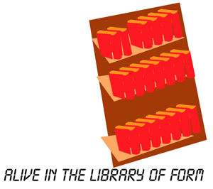

Alive In the Library of Form

What can we possibly say, when everything has been said? Everything! We have access to a massive information dump of everything that has been written, or recorded and broadcasted on TV.
Problematic as it can be, the fact that everything has been said doesn't cut out the possibility of saying something new. We aren't ever gonna run out of ways of combining those age-old words of wisdoms that have been repeated in oh-so-many ways. Despite this, however, most of the information exchange that takes place these days are highly ritualized TV / Media spectacle.
Standard Scenario: Cultural debate program: interview 12 people for approx 2 hours each - cut out a few well-chosen sentences, totally out of context, from each interviewee that match the broad-cast network's current sociopolitical/financial mesh status and end up with a lame 5 minute reportage that says absolutely nothing.
In the age of the post-modern miracle, this leaves us with an array of left-over material, things that never get said on the aether, immense resources of material that never gets face time. What gets face time is primordial signifiers, memes that carry so little information that they work in a totally different department. Memes that have been fossilized a long time ago, and are now so thoroughly reverse-engineered that they now function as important push button social (or hive-) control devices.
How can it be true that criminality is on the increase? In the entirety of my 27 year old life, hive machinery has toted the alert that criminality is escalating and morality is on the decrease, but I have not seen that development. Things are bad, yes, but it's just a basic state of the world. What is true, however, is that panic signals are a control device that works. Input panic signals of bourgeoise distress, and increase the bourgeiose mindset. The bourgeuoise is a self-replicating virus, a feedback loop that keeps itself going, whose main feedstuff is moral panic and self preservation. Not that I care, that lifestyle will outlive me for centuries, I am not interested in that sphere of life. Although in a way it might be necessary to have a moral majority, they should be tightly controlled and not get out of hand, and start killing off poor people, or killing or sterilizing mentally defective people as they tend to do with frequent intervals.
Back to the main narrative... so we have seen that only an extremely limited part of the great mass of information ever gets on the air. Probably more diversified selections of that intellectual "database" are written down in books. The Internet is an interesting variety of this information extraction procedure; on the net, certainly a more diversified version of the great library of form is presented. Now you might ask "what is the library of form", it's a notion of wack writer Borghes, of a large library which contains all information in the world. The library contains all possible mutations of a text - it can be long or short, it can be totally intelligible or totally unintelligible. It would be possible to create a library of form with a simple randomizing device connected to a typewriter. If the typewriter typed forever you could find *any* possible text in there. You could find the current version of the Iliad, as well as the original Hellenic script, you could find lost transcripts, books that never have been, or will be written, in short: every possible and impossible version of every text.
Now we don't have the datapower to handle such an infinity yet, but the mass of current written material contains a lot of stuff. Enough stuff, in fact, that it's highly likely that if you say and write something, some anal bastard can track something similar down to what a fat monk wrote in the 13th century, or to what some Neo-Manicheaist scholar wrote in medieval China, or some of the "great" western philosphers wrote in their tomes. So you cannot say anything that hasn't been said before. A primitive solution to this problem is the cross-discipline pomo cut and paste writing that was a western fad during the latter part of the last century. There are several problems with that approach. The first problem is that the narrative of the scholar doing that type of writing is never threatened. She or he is just selecting things with a history, and intertwining them into a new piece of writing. The notion of originality and backtracking of memes is completely useless when everything has been said so many times. If, for example, Kant, said something first, then, every time this piece of intellectual copyright is used, the ghost of Kant will be present, and enforce a Kantian understanding of the piece 'o information. Problem is that the same piece of intellectual bullshit can be interpreted, equally enlightening, from an infinite array of paradigmatic positions. With the history function turned on, writing can only work to enforce old and outdated paradigmatic understandings and positions. This is, of course, a natural byproduct of the bourgeouise world where western-style research comes from.
This leaves us with a freedom to understand the data-space of the world, its written records and recordings, as a basically historyless data-dump that has been placed on us to parse by uncaring superiors. The weight of the history of the datamesh is so immense that it can crush us in an instant, but the history is actually just make believe smoke & mirrors intended to hide the fact that there's no intrinsical history; the words and sayings actually don't convey history any more, perhaps except for the latest month's spoon-fed custodial media imprints from newspapers and the telly. But that data isn't persistent - when media focus changes so do our values. We forget what has been, and remember only the present.
So, stop name-dropping, just steal ideas and forget who you stole from, revert only to mentioning names when you want to bring into focus the reality-nimbus of that person, or invoke a certain worldview. In other cases, keep shut, and grab all the data that you can carry from the unguarded safety vaults of the past and put together the texts and media of your desire.
regards,
Joel Westerberg